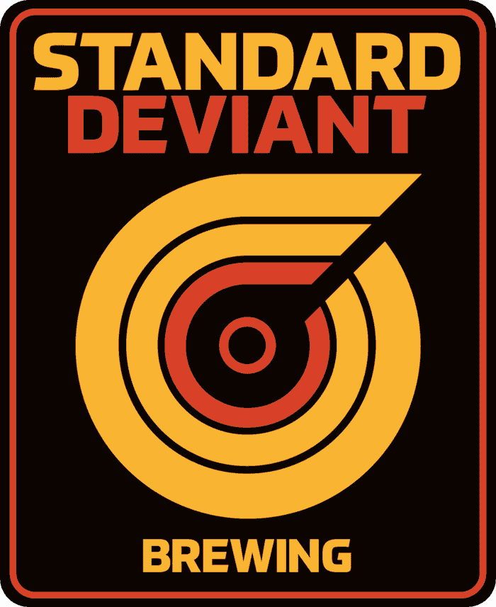

Standard Deviant Brewing
Home
Menu
280 14th Street
San Francisco
CA
USA
94103
map
Thu 4-10
Fri 4-12
Sat 1-12
Sun 12-9
(415) 590-2550
for inquires contact
info@standarddeviantbrewing.com
News
Go Drink This: Standard Deviant Brewing Extra Pale Ale
sfist
AUG 31, 2016 12:40 PM PST
Standard Deviant Brewing Now Softly Open in the Mission
Eater SF
Aug 2, 2016, 11:45a PST
Now Open In The Mission: Standard Deviant, A Craft Brewery
Hoodline
Mon. August 1, 2016, 3:39pm PST
Standard Deviant Brewing To Open Soon At 14th & Mission
Hoodline
Mon. June 6, 2016, 12:48pm PST
Signup for news & events